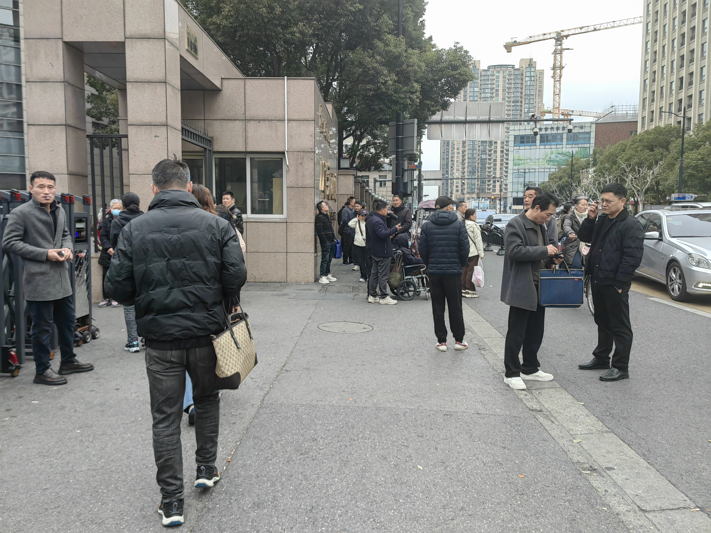
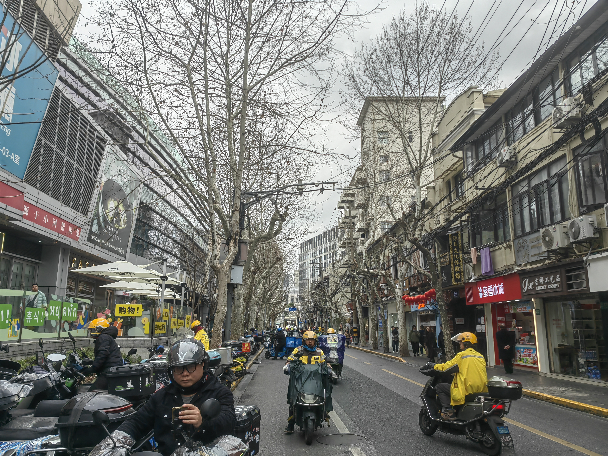

徐家汇认知刺激资源密集，但对许多老年人而言，入口错位或难以进入。 下文说明如何用模型找到干预点，并在人机共生空间里落地。
医疗、商业、交通、体育、文化等极核让徐家汇成为高强度认知刺激场：既有商业与换乘带来的高压刺激，也有书院、风貌区与地标叙事提供的慢节奏素材。 第六极核——科技产业集聚——提供了用技术手段翻转压制的现实条件。
斜土路的负向刺激制造认知负荷，田子坊的优质认知素材被防御状态屏蔽。 两种失灵背后是同一个缺位：没有机制能把已有刺激和已有人群转化为认知资源。


认知恢复线修复"环境→老年人"伤害；人机共生线将工作人口在场 从排他力量转化为代际接触机会。人机共生空间是同时驱动两条线的技术界面。
五类老年人在出行节律、与就业人群的交集上差异明显，是后续空间分析的共同起点。
人群与多源空间数据汇入同一套流程：指标挂载 → 模型变量 → CSVI（E / S / AC）， 再与地图、停留矩阵、节点与选址衔接。下图是全流程总览。
CSVI = E × S ÷ (AC+1)：暴露度 E、敏感性 S、适应能力 AC 合成单一得分； 两种失灵分别体现在 S 的两项（Senv / Scontact）。下方为结构示意。
与上一节同一套结果：E、S、AC 在徐汇区的空间分布。
用两条停留意愿指标作平面投影，同一套计算从不同侧面呈现脆弱性差异。
潜力节点为激活三亚型（A₁/A₂/A₃），判定与街段 CSVI、W 轴一致；
资源节点对应表内五列资源主导（医疗/科技/商业/体育/文化，列名含 AC_soc_cul_dom）；未拆类的页面用五列均值作 AC_phys（旧表仅四列时退回四列均值）。叙事与地图不单独呈现廊道空间。
以斜田潜力区为核，识别四类资源与五条认知轴，推动资源向老年人汇聚，构建「一核五轴·多点共生」网络。
将潜力节点聚集区域定为斜田认知潜力核心区，识别医疗、体育、商业、科技四类资源区，制定人机共生空间导则引导资源向老年人流动，最终形成商业、体育、科技及两条社会认知轴线，构建"一核五轴·多点共生"的认知支持网络。
沿潜力区—认知廊道—资源区展开轴线：交感街道、横行连廊、感知公园与第三空间 Box 等原型如何落位。 交互图右下可切换三条导则图层——感知-判断-干预闭环、节点就地生长与交替、廊道时空节奏——与上文节点类型与选址形成「在哪、做成什么样、按什么规则运转」的衔接。
两种失灵背后存在自我强化回路；上方为二维因果回路呈现多回路同时作用的结构与关键节点；底部为同一外生节律下的双情景 SD 轨迹对比（无干预 / 有 N18 干预）。
设计能主动制造代际接触还是只能提供偶遇条件？
潜力与资源节点若涉及产权边界，设计与治理如何划界？
运营主体缺失后闭环多快退化？
这三个问题是设计第一天就该正视的。